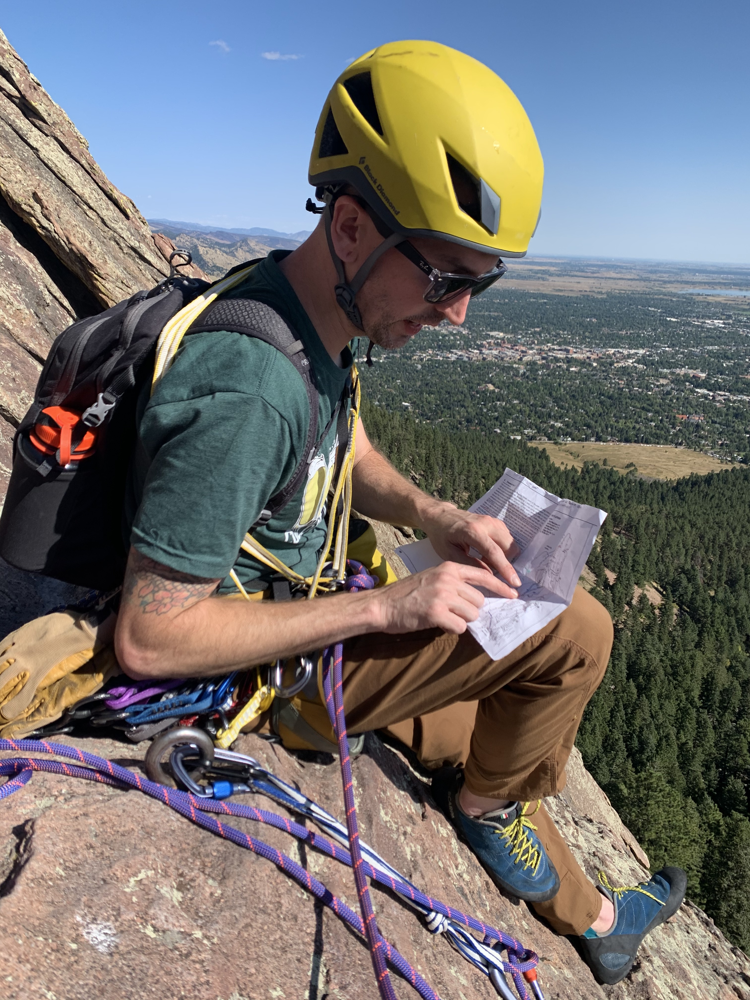

I’m a Product Designer who has been gaining experience and studying various disciplines in tech since 2019. I have knowledge in every facet of the design process, from problem validation to prototyping, and creating high-fidelity mockups. In 2021 I completed Georgia Tech’s UX/UI Bootcamp, received a certificate in Product Management from General Assembly, and became a Certified Scrum Product Owner (CSPO).
Currently I'm working as a UX designer at CareStream on their dental practice management software, Sensei Cloud, where I lead efforts in building and maintaining our component library and design system in Figma. I also piloted a continuous discovery program and helped build the UX team from 1 to 5 members. Before CareStream, I was a UX/UI designer at Tech for Campaigns, designing Matt Koleszar's re-election website with a cross-functional team. (Matt won the election by the way!) I’m passionate about discovering customer needs and delivering UX solutions that meet those needs, while creating value for the business. I know how important it is to make data-informed decisions and to continue to iterate on designs, because no solution is perfect.
I have the soft skills to collaborate with stakeholders, the technical know-how to explore feasibility with developers, as well as an eye for detail, and love for solving problems; these things make me a very efficient and effective designer. I’m capable of conducting UX research, facilitating usability testing, and making quick sketches to articulate designs on the fly. I’m humble, but I have a strong personality and advanced communication skills that help me drive decisions and create alignment within a team.
In the past I ran a company called Spotlight Sound Studio, a recording studio where I offered digital audio production services. My studio was the number one recording studio in Alpharetta, GA for several years. In that time I gained a lot of experience working with teams and using software to deliver high-quality products, while balancing the scope, schedule, and cost of the projects that I was hired to produce.
I started working in the recording industry because I’m a musician and multi-instrumentalist; I sing, play guitar, drums, bass and the keyboard. I started playing and writing music as a child and I have been a part of several bands. It has allowed me to travel all over the US, Canada, and Japan to perform. This led me to get a degree in Recording Arts and open a recording business.

I've been using technology, managing files, people, and projects for years. This experience gave me a curiosity for digital product management and coding, so I started reading books about the associated topics and this fueled my curiosity even more. Over the last four years I have been taking classes on Front-End Development, Product Management, and UX/UI Design.
In my free time I love to travel and explore. I'm fascinated by building and flying RC helicopters as well as growing and propagating plants. My main hobby is mountaineering / rock climbing. I love the safety systems and equipment involved in completing a climb. I enjoy being in beautiful places, working with a partner to achieve a goal while getting a serious workout. It’s an iterative process that requires focus and it's incredibly rewarding when you make it to the top of a mountain!